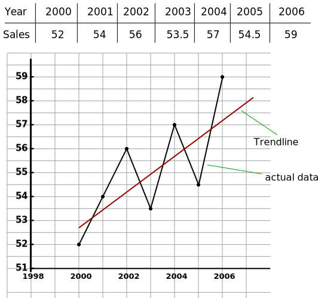

Time series
A time series refers to a sequential collection of data points or observations recorded over time intervals.
These intervals could be regular (daily, weekly, monthly) or irregular, depending on the nature of the data
being observed.
Here's how the rest of the text could be expanded and corrected:
- Time series data is of particular interest in economics, business, and commerce, where the values of a
variable are observed chronologically by days, weeks, months, quarters, or years. This type of data
provides insights into trends, patterns, and relationships over time, which are crucial for
decision-making and analysis.
- Time series analysis is conducted primarily for two main purposes:
- To make forecasts for the future based on historical data trends. This forecasting helps businesses
and economists anticipate market trends, sales patterns, economic indicators, and other variables
crucial for planning and strategy.
- To evaluate past performance and understand the dynamics of the data over time. This includes
identifying seasonality, trends, cycles, and irregular fluctuations that can impact decision-making
and strategy formulation.
- Applications of time series analysis are widespread:
- Economists use time series analysis to estimate figures such as national income, inflation rates,
unemployment rates, and other key economic indicators. This information is vital for economic
policy-making, forecasting, and understanding economic trends.
- Businesses utilize time series analysis for sales forecasting, demand planning, inventory
management, financial modeling, and risk management. It helps businesses optimize operations,
allocate resources efficiently, and make informed decisions.
- In natural sciences, time series analysis is used in environmental monitoring, climate modeling,
geological studies, and more. It aids in understanding natural phenomena, detecting trends, and
predicting future events.
- Social scientists apply time series analysis in areas such as demographic studies, population
dynamics, crime rates analysis, and public policy evaluation. It provides insights into societal
trends, behavior patterns, and policy effectiveness.
Components of time series
- ☆ Secular trend or trend
- ☆ Seasonal variations
- Cyclic variations
- Irregular Variations
Secular Trend
- It is the smooth, regular and long term movement of a series showing continuous growth,
stagnation or decline over a long period of time.
Seasonal Variations
- Seasonal variations are short-term periodic movements that occur regularly within a period of
one year or shorter.
- Examples:
- Monthly fluctuations in ice cream sales during summer and winter seasons.
- Quarterly variations in retail sales due to holiday seasons.
- Weekly changes in traffic volume in tourist destinations.
Cyclic Fluctuations
- These refer to long-term oscillations or swings about a trend line or curve.
- These cycles may or may not follow exactly similar patterns after equal intervals of time.
- In business and economic activities, movements are considered cyclic only if they recur after
intervals of more than one year.
- Example: Business investment cycles, real estate market cycles, economic boom and bust cycles.
Irregular Variations
- These variations do not show any definite pattern.
- They include accidental changes that are purely random, uncontrolled, and unpredictable.
- Examples: Natural disasters like earthquakes, unpredictable market fluctuations due to
geopolitical events, sudden changes in consumer behavior.
Measurement or Analysis of Secular Trend
- Free hand method (or graphical method)
- Method of semi-averages
- Method of moving averages
- Method of least squares
Free Hand Method
- In this method, we visually plot the data points on a graph over time to identify the long-term
trend.
- The steps involved in the free hand method include:
- Plotting the data points on a graph with time on the x-axis and the variable of interest on
the y-axis.
- Identifying any patterns or trends in the plotted data, such as upward or downward movements
over time.
- Connecting the data points with a freehand line to represent the overall trend direction.
- Analyzing the slope and direction of the trend line to understand the magnitude and
direction of the secular trend.
Question: Determine a trend line from the following:
